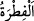
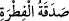
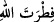

kimsedir.” el-Müfredât’ta ise şöyle der: “, dalâletten istikâmete meyletmek
demektir. “ Falanca istikamet yolunu araştırdı demektir. Araplar, İbrahim
(a.s.)’ın dini üzere olduğuna dikkat çekmek üzere sünnet olan veya hacceden herkese
‘hanîf’ adı vermiştir.
Zemahşerî’nin beliğ sözlerinden birisi şöyledir:
Cömertlik ve hilm Hâtimî ve Ahnefî’dir.
Din ve ilim ise hanîfî ve Hanefî’dir.
Yâni cömertlik Hâtim Tâî’ye, hilm Ahnef b. Kays’a nisbet edilmiştir. Nitekim din
İbrahim (a.s.)’a, ilim de Ebî Hanîfe’ye (r.h.) nisbet edilmiştir.
Bazıları âyet hakkında şöyle demiştir: “Yüz, kendisine yönelinen şeydir. İnsanın ameli
ve dini de insanın düzeltmek ve doğrultmak için yöneldiği şeylerdendir. Buna göre mânâ
şöyle olur: Tahrif edilip nesh edilmiş bütün dinleri bırakıp kendisine meylederek dînini
hâlis kıl ve amelini düzelt.
“Allah insanları hangi fıtrat üzere yaratmış ise ona çevir.”
“, vezni ve mânâsı aynı olan hilkat/yaratılış demektir. “ sözü,
yaratılmış bir insanın sadakası demektir. Bu da ‘başın zekâtı’ sözü ile aynı anlama çıkar.
Âyetteki ‘fıtrat’ ile yüz çevirme ve inkâr olmaksızın tevhîde ve İslâm dinine kabiliyet
kastedilmiştir.
Râğıb der ki: “ (Allâh’ın yaratması)”, Allâh’ın insanlarda eşsiz olarak var
(Allâh’ın yaratması)”, Allâh’ın insanlarda eşsiz olarak var
edip yerleştirdiği îmânı bilip tanıma kuvvetidir. “Andolsun onlara kendilerini kimin
yarattığını sorsan elbette “Allah” derler.” (ez-Zuhruf, 43/87) âyetinde de buna işâret
edilmektedir.
“, şeklinde mansub yapılması teşvik (iğrâ) içindir. Yâni Allâh’ın fıtratına
yüzünü çevir ve ona sarıl, demektir. Buradaki hitap herkesedir. Nitekim (sonraki
âyetteki) “Hepiniz O’na yönelerek” ifâdesi buna açıklık getirmektedir. “Çevir”
ifâdesinin müfred/tekil kullanılması, Rasûlullah (s.a.)’in ümmetin imamı olması,
dolayısıyla ona emredilmesinin bütün ümmete emredilmesi sonucunu doğurması
sebebiyledir.
Fıtrata sarılmak ile onun gereğince hareket etmek, hevâya ve şeytanın süsleyip
ayartmasına uyarak onu ihlal etmemektir.
“ (İnsanları hangi fıtrat üzere yaratmış ise)” ifâdesi, “ın
sıfatıdır. Emri yerine getirmenin vâcib olduğunu te’kid etmektedir. Çünkü, insanların
hakkı kabûlünden ve onu idrâk edebilmelerinden ya da İslâm dininden ibâret olan
Allâh’ın insanları kendisine göre yarattığı fıtrat, kendisine sarılmayı ve kesin olarak sıkı
sıkıya yapışmayı gerekli kılan hususlardandır. Çünkü onlar yaratıldıkları hal üzere
bırakılsalar, bu durum onları Allâh’ın fıtratına/İslâm’a götürür ve onun üzerine başka
bir din seçmezler. Onlardan kim yoldan çıkarsa, insan ve cin şeytanlarının azdırması